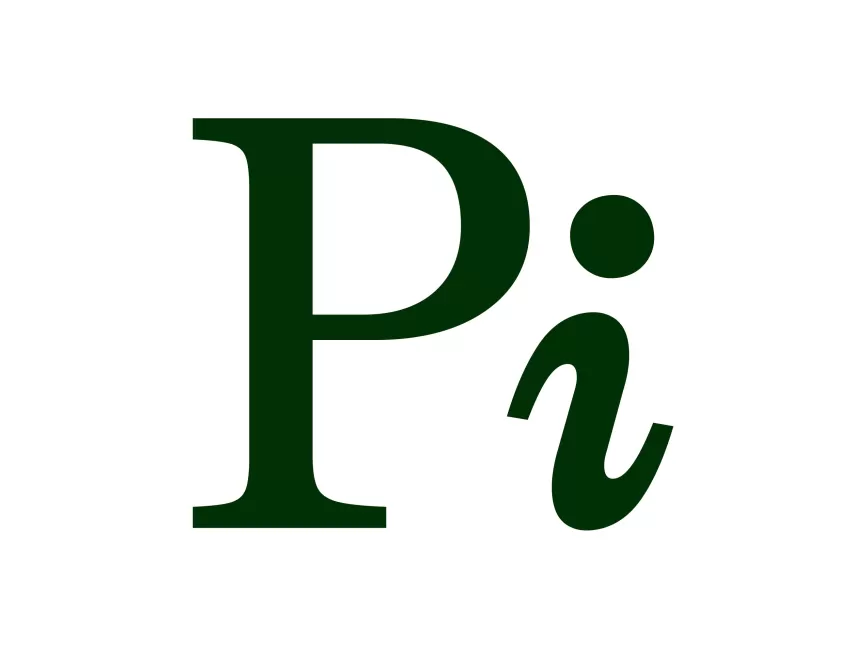
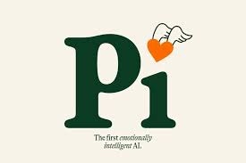
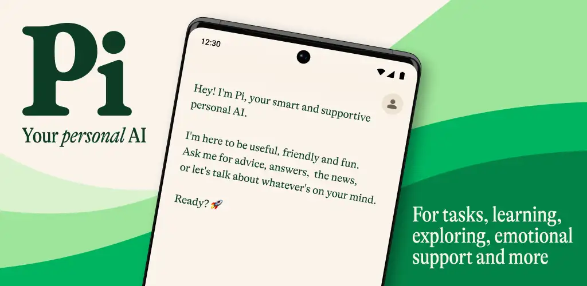

Pi es un asistente conversacional diseñado para mantener diálogos naturales, responder preguntas, brindar apoyo y ofrecer una experiencia cercana y amigable.
Ir a Pi OficialAsistente personal
Conversación natural
Interacción amigable


Dialoga de manera natural y sencilla.
Ofrece respuestas cercanas y comprensibles.
Ayuda a generar propuestas y soluciones.
Explica conceptos y responde preguntas.